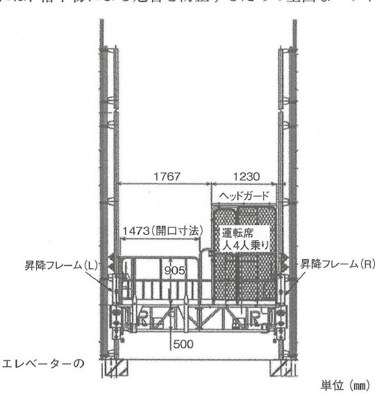

原文
次の設問1から設問3の設備又は機械を安全に使用するための留意事項を、それぞれ2つ具体的に記述しなさい。
ただし、解答はそれぞれ異なる内容の記述とし、保護帽や安全帯などの保護具の使用、資格、免許及び届出に関する記述は除くものとする。
- 設問1 ロングスパンエレベーター
- 設問2 高所作業車（クローラ式の垂直昇降型）
- 設問3 バックホウ（バケット容量0.5m³程度）
次の設問1から設問3の設備又は機械を安全に使用するための留意事項を、それぞれ2つ具体的に記述しなさい。
ただし、解答はそれぞれ異なる内容の記述とし、保護帽や安全帯などの保護具の使用、資格、免許及び届出に関する記述は除くものとする。
Đối với từng thiết bị hoặc máy móc từ Câu hỏi 1 đến Câu hỏi 3, hãy trình bày cụ thể 2 điểm cần lưu ý để sử dụng an toàn.
Tuy nhiên, các câu trả lời phải có nội dung khác nhau. Không được sử dụng các nội dung liên quan đến phương tiện bảo hộ như mũ bảo hộ, dây an toàn; bằng cấp/chứng chỉ; giấy phép; thủ tục thông báo.
① エレベーター出入口と各階との段差を小さくする。出入口を使用しないときは、金網などを用いて養生しておく。
② ロングスパンエレベーターの積載荷重は、1.0t未満である場合が多いので、その荷重制限を守るようにする。また、その昇降速度を10m/min未満とする。
1. Giảm tối đa độ chênh cao giữa cửa ra vào của thang nâng và sàn của từng tầng. Khi không sử dụng cửa ra vào, phải che chắn/bảo vệ bằng lưới thép hoặc biện pháp tương tự.
2. Tải trọng cho phép của thang nâng long-span trong nhiều trường hợp nhỏ hơn 1,0 t, vì vậy phải tuân thủ giới hạn tải trọng. Ngoài ra, tốc độ nâng hạ phải nhỏ hơn 10 m/min.
① 高所作業車を用いた作業では、作業指揮者を定め、その作業指揮者による指揮の下で作業を行うようにする。
② ブレーキ・クラッチなどの機能を作業前に点検する。その後、作業半径内に障害物がないことを確認してから作業を開始する。
1. Khi sử dụng xe làm việc trên cao, phải chỉ định người chỉ huy công việc（作業指揮者）, và thực hiện công việc dưới sự chỉ huy của người này.
2. Trước khi làm việc, phải kiểm tra chức năng của phanh, ly hợp và các bộ phận tương tự. Sau đó phải xác nhận không có vật cản trong phạm vi hoạt động rồi mới bắt đầu công việc.
① バックホウを用いた作業では、土砂などを積み込むときのバケットの旋回方向を、ダンプトラック運転者の頭上を通過しない方向とする。
② 作業半径内の立入禁止措置を講じる。また、土砂などを積み込むときは、誘導員を配置し、その誘導員による合図の下で作業を行うようにする。
1. Khi dùng backhoe để xúc đất lên xe ben, hướng quay của gầu phải được bố trí sao cho gầu không đi qua phía trên đầu người lái xe ben.
2. Phải áp dụng biện pháp cấm người đi vào phạm vi hoạt động. Khi xúc đất, phải bố trí người hướng dẫn（誘導員） và cho vận hành theo tín hiệu của người này.
ロングスパンエレベーターは、長尺の昇降設備を有するエレベーターであり、複数名の人員や長尺の建材などを運搬するときに使用されている。ロングスパンエレベーターの運転には、資格は特に必要とされない。
ロングスパンエレベーターを設置するときは、クレーン等安全規則に基づき、次の事項について、所轄の労働基準監督署長に報告しなければならない。
Thang nâng long-span là loại thang nâng có kết cấu nâng hạ dạng dài, được sử dụng để vận chuyển nhiều người hoặc vật liệu xây dựng dài. Đối với việc vận hành thang nâng long-span, sách nêu rằng không yêu cầu một loại chứng chỉ đặc biệt.
Khi lắp đặt thang nâng long-span, căn cứ Quy tắc an toàn đối với cần trục và các thiết bị tương tự, phải báo cáo với người đứng đầu Cơ quan Thanh tra tiêu chuẩn lao động có thẩm quyền tại địa phương.
ロングスパンエレベーターの設置場所を決めるときは、建築物との間の納まりや取付け部材の強度を確認し、機械の搬入・組立・解体・搬出までのプロセスを考慮する必要がある。
Khi quyết định vị trí lắp đặt, cần xác nhận cách ăn khớp/bố trí tiếp giáp（納まり） giữa thang và công trình, xác nhận cường độ của các cấu kiện dùng để lắp đặt, đồng thời xem xét toàn bộ chuỗi công việc từ đưa máy vào, lắp ráp, tháo dỡ đến đưa máy ra khỏi công trường.
ロングスパンエレベーターは、三相200Vのモーターにより、ガイドレールに沿って昇降する設備である場合が多い。その昇降速度は、10m/min以下（1分間につき10m以下）である。
次頁の図は、ヘッドガード付きの4人乗りのロングスパンエレベーターの一例であり、その搬器は支間3mのガイドレール間に設けられている。
Thang nâng long-span thường được nâng hạ dọc theo ray dẫn hướng（ガイドレール） bằng động cơ điện ba pha 200 V. Tốc độ nâng hạ là 10 m/min trở xuống, tức là trong 1 phút di chuyển không quá 10 m.
Hình ở trang tiếp theo là ví dụ một thang nâng long-span 4 người, có head guard, trong đó lồng nâng được bố trí giữa hai ray dẫn hướng với nhịp khoảng 3 m.
① ロングスパン工事用エレベーターには、次のような安全装置を備えなければならない。
② 搬器の搭乗席の周囲には、原則として、高さ1.8m以上の囲いを設ける。
③ 搬器上の搭乗席以外の部分と接する部分は、囲い以外の遮断設備としてもよい。
④ 搬器の搭乗席には、落下物による危害を防止するための堅固なヘッドガードを設ける。
1. Thang nâng long-span dùng cho công trường phải được trang bị các thiết bị an toàn sau:
2. Theo nguyên tắc, xung quanh vị trí người đứng/ngồi trên lồng vận chuyển phải có hàng bao che cao từ 1,8 m trở lên.
3. Tại phần tiếp giáp với khu vực trên lồng không thuộc vị trí chở người, có thể sử dụng thiết bị ngăn cách khác thay cho hàng bao che.
4. Tại vị trí chở người của lồng phải bố trí head guard chắc chắn để phòng ngừa nguy hiểm do vật rơi.

高所作業車は、高さ2m以上の高所で作業ができるよう、作業床が設けられた車両である。クローラ式の高所作業車は、ホイール式のものとは異なり、履帯を有しているため、建設現場などの不整地であっても走行できる。垂直昇降型の高所作業車は、ブーム型のものとは異なり、作業床の水平位置を変えずに昇降させることができるため、狭い場所での作業に適している。
Xe làm việc trên cao là phương tiện có sàn công tác, cho phép thực hiện công việc ở vị trí cao từ 2 m trở lên. Loại bánh xích khác loại bánh lốp ở chỗ có dải xích（履帯）, do đó có khả năng di chuyển trên nền không bằng phẳng như tại công trường xây dựng. Loại nâng thẳng đứng khác loại cần boom ở chỗ có thể nâng hoặc hạ sàn công tác mà không thay đổi vị trí theo phương ngang. Vì vậy, nó phù hợp với công việc ở không gian hẹp.
※この問題では「資格・免許に関する記述は除く」とあるので、ここに記した内容を解答欄に書いてはならない。
Tuy nhiên, đề thi này quy định không được viết nội dung liên quan đến chứng chỉ hoặc giấy phép, vì vậy các nội dung trên không được sử dụng trong phần trả lời của đề thi.
事業者は、高所作業車を用いて作業する場合、作業指揮者を定め、その者に作業の指揮を行わせなければならない。なお、高所作業車を用いた作業において、作業主任者を選任する必要はない。
Khi sử dụng xe làm việc trên cao, đơn vị sử dụng lao động phải chỉ định người chỉ huy công việc（作業指揮者） và để người này trực tiếp chỉ huy công việc. Đối với công việc sử dụng xe làm việc trên cao, không cần chỉ định 作業主任者.
バックホウは、機械位置よりも下方にある土を根切りするために使用される掘削機械である。バケットを旋回させて積み込む際に、労働災害が発生しやすいので、バックホウの運転者は、技能講習の修了者としなければならない。
Backhoe là máy đào được sử dụng để đào đất nằm thấp hơn vị trí của máy, chẳng hạn trong công tác đào đất（根切り）. Do tai nạn lao động dễ xảy ra khi quay gầu để xúc và đổ đất, sách nêu rằng người vận hành backhoe phải là người đã hoàn thành 技能講習.
| 日本語 | 読み方 | Tiếng Việt | Giải thích | Liên quan |
|---|---|---|---|---|
| ロングスパンエレベーター | long span elevator | thang nâng long-span | Thiết bị nâng dùng tại công trường để vận chuyển người và vật liệu dài. | 積載荷重, 搬器, ガイドレール |
| 高所作業車 | こうしょさぎょうしゃ | xe làm việc trên cao | Xe có sàn công tác để thực hiện công việc ở vị trí cao. | クローラ式, 垂直昇降型 |
| クローラ式 | クローラしき | loại bánh xích | Di chuyển bằng dải xích thay vì bánh lốp. | 履帯, 不整地 |
| 垂直昇降型 | すいちょくしょうこうがた | loại nâng hạ thẳng đứng | Sàn công tác nâng lên/hạ xuống mà không đổi vị trí ngang. | 高所作業車 |
| バックホウ | バックホウ | máy đào backhoe | Máy đào dùng để đào đất thấp hơn vị trí của máy. | 根切り, バケット, 旋回 |
| 積載荷重 | せきさいかじゅう | tải trọng chất lên / tải trọng cho phép | Tải trọng người, vật liệu và hàng hóa tác dụng lên thiết bị. | 荷重制限 |
| 搬器 | はんき | lồng/thùng vận chuyển | Bộ phận trực tiếp chứa người hoặc hàng để nâng hạ. | 勾配, ヘッドガード |
| 作業指揮者 | さぎょうしきしゃ | người chỉ huy công việc | Người trực tiếp chỉ huy trình tự và thao tác công việc. | 作業主任者 |
| 作業主任者 | さぎょうしゅにんしゃ | người phụ trách công việc | Chức danh riêng được yêu cầu cho một số loại công việc; không đồng nhất với 作業指揮者. | 作業指揮者 |
| 誘導員 | ゆうどういん | người hướng dẫn tín hiệu | Người hướng dẫn máy hoặc phương tiện bằng tín hiệu. | 旋回, 合図 |
| 立入禁止措置 | たちいりきんしそち | biện pháp cấm vào | Biện pháp ngăn người không liên quan đi vào vùng nguy hiểm. | 安全柵 |
| 所轄の労働基準監督署長 | しょかつのろうどうきじゅんかんとくしょちょう | người đứng đầu cơ quan thanh tra lao động có thẩm quyền | Cơ quan tiếp nhận các báo cáo theo nội dung sách. | 設置報告書 |
| 荷重試験 | かじゅうしけん | thử tải | Kiểm tra thiết bị dưới tải trọng quy định. | 積載荷重 |
| 定期自主検査 | ていきじしゅけんさ | kiểm tra định kỳ tự chủ | Kiểm tra định kỳ do phía sử dụng/quản lý thực hiện. | 検査 |
| 落成検査 | らくせいけんさ | kiểm tra hoàn thành | Kiểm tra sau khi thiết bị được lắp đặt hoàn chỉnh. | 検査証 |
| 納まり | おさまり | bố trí tiếp giáp / cách lắp vừa | Quan hệ hình học và cấu tạo giữa thiết bị với công trình. | 取付け部材 |
| 遮断設備 | しゃだんせつび | thiết bị ngăn cách | Lưới, cửa chắn hoặc cấu kiện ngăn tiếp cận khu vực nguy hiểm. | 金網, 囲い |
| ガイドレール | ガイドレール | ray dẫn hướng | Ray khống chế hướng chuyển động của lồng nâng. | 搬器 |
| エレベーター構造規格 | エレベーターこうぞうきかく | tiêu chuẩn kết cấu thang nâng | Tiêu chuẩn về kết cấu và thiết bị an toàn của thang. | 警報装置, ヘッドガード |
| 警報装置 | けいほうそうち | thiết bị cảnh báo | Thông báo trạng thái nâng/hạ của lồng vận chuyển. | 安全装置 |
| 搭乗席 | とうじょうせき | vị trí chở người | Khu vực người đứng/ngồi trên lồng. | 囲い, ヘッドガード |
| 履帯 | りたい | dải xích | Bộ phận bánh xích giúp máy di chuyển trên nền không bằng phẳng. | クローラ式 |
| 不整地 | ふせいち | địa hình/nền không bằng phẳng | Nền công trường chưa được san phẳng. | クローラ式 |
| 敷鉄板 | しきてっぱん | tấm thép kê nền | Dùng để phân bố tải và cải thiện điều kiện nền cho máy. | 支持力 |
| 支持力 | しじりょく | sức chịu tải | Khả năng nền chịu tải trọng của thiết bị. | 地盤 |
| 根切り | ねぎり | đào đất hố móng | Đào đất đến cao độ thiết kế phục vụ móng, tầng hầm và các phần ngầm. | バックホウ |
| 旋回 | せんかい | quay | Chuyển động quay của phần trên hoặc gầu máy. | バケット |
Trong nội dung Book page 193, khi sử dụng xe làm việc trên cao phải chỉ định 作業指揮者 để chỉ huy công việc; đồng thời sách ghi rõ 作業主任者を選任する必要はない. Hai thuật ngữ này là hai vai trò khác nhau và không được thay thế cho nhau khi làm bài.
Đề năm Heisei 28 loại trừ nội dung về phương tiện bảo hộ,資格,免許 và届出. Vì vậy phần giải thích về điều kiện đào tạo của người vận hành là kiến thức để hiểu thiết bị, nhưng không được dùng làm đáp án cho chính câu hỏi này.
| Thiết bị | Recall cue |
|---|---|
| ロングスパンエレベーター | 段差・積載荷重・昇降速度 / 0.25t以上1t未満 / 1t以上 / 1/10 / 1.8m以上 / 10m/min以下 |
| 高所作業車 | 作業指揮者・地盤・敷鉄板・立入防止・誘導員・ブレーキ/クラッチ |
| バックホウ | 立入禁止 → 誘導員 → 事前確認 → 頭上を通さない |
Long-span elevator: tải trọng 0,25 t đến dưới 1 t và 1 t trở lên có yêu cầu báo cáo khác nhau; độ nghiêng 搬器 không để vượt 1/10; bao che quanh 搭乗席 cao 1,8 m trở lên; tốc độ nâng hạ ở phần giải thích là 10 m/min trở xuống.
高所作業車: mốc chiều cao sàn công tác là 2 m và 10 m.
Book page 190, ví dụ đáp án viết 10m/min未満, trong khi Book page 191 viết 10m/min以下. HTML giữ nguyên cách diễn đạt của từng trang, không tự sửa đồng nhất.
高所作業車: Nền → người → máy: địa盤 / cấm vào + 誘導員 / ブレーキ・クラッチ.
バックホウ: 立入禁止 → 誘導員 → 事前確認 → 頭上を通さない.
| {{HEADER_1}} | {{HEADER_2}} |
|---|---|
| {{ROW_KEY}} | {{ROW_RELATION}} |
{{NOTE_CONTENT}}
{{WARNING_CONTENT}}
{{MEMORY_ITEM}}